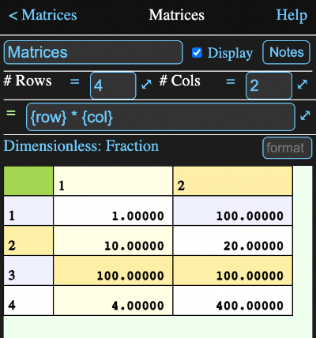

While all Math Minion numerical calculations work with matrices, even if it is just a 1x1 matrix, there is also this specific matrix tool.
It allows for a detailed specification of a matrix. Here independent formulas can be supplied for each row, column or cell and these formulas are allowed to reference other cells in the matrix.
Formulas can be entered into cells, row and column headers and the origin header at the upper left.
The value for a cell is determined by first checking to see if it has a formula itself and if not then its corresponding row header, column header and finally the star header in that order.
Note that the row, col and cell functions are useful for referencing other cells in the matrix and can only be used in formulas inside matrix cells.
Below is an image of the information view for a small matrix.
The cells with a gold background have formulas defining them, while a green background is used for the currently selected cell whose formula appears in the formula field. In this case it is the origin cell at the top left and its formula is:
{row} * {col}
which means any cell which doesn't have any other formula will have a value equal to its row number times its column number. In this case that would only be cells 1,1 and 4,1.
The header cell for row 2 has a formula:
{col} *10
which sets the values of 2,1 and 2,2 to ten times the column number.
The header cell for column 2 has the formula:
{row} * 100
which sets the values for cells 1,2 and 4,2. Row header formulas have precedence over column headers, so 2,2 is set by the row 2 header formula. Cell 3,2 has a constant 10000 as a formula and cell formulas always have priority.
Finally the formula for cell 3,1 is
{cell -1, 1} * 5
which says take the value from the cell one above me and one to the right. In other wordes 3,1 + -1,1 = 2,2. Cell 2,2 has a value of 20 which is multiplied by 5 to yield 100.
These formula fields designate the number of rows and columns in the matrix. While normally just a constants, they can be any legitimate Math Minion formula.
This formula field shows the formula associated with the currently selected cell. Tapping on and cell place the formula for that cell in the field, where it can be entered or modified.
A pair of numbers in square brackets is displayed at the left of the view, below the formula field. This indicates the row and column numbers of the currently selected matrix cell. Row and column headers have a zero index.
The default unit and unit type for the matrix are displayed to the right of the conversion selection indices.
This should be set before any formulas are entered into the matrix, as all values in a matrix must be of the same unit type.
If the unit needed doesn't exist in the unit browser, for instance something like "s^0.3", then be sure to first assign a formula to the default cell 0,0 which will have the correct unit dimension. For example, perhaps 0 s^0.3 in this case.
Parameters that can be accessed in the form a.b where a is the tool name and b is the parameter name.
Note - use these parameters (for example $.nrow) in self referencing cell formulas, rather than the nrows or ncols functions or the [] operator.